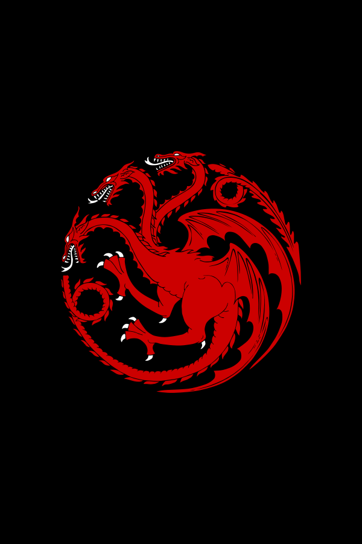

| CEO Supremo e Visionário Principal |
Google |
2000-2025 |
Revolucionou a busca online e criou o Google Universe |
 |
| Diretor Global de Inovação e Magia |
Apple Inc. |
2025-2050 |
Lançou o iStone e introduziu "respirar para carregar" |
|
| Arquiteto Chefe de Realidades Alternativas |
Microsoft |
2050-2075 |
Desenvolveu o Windows Universo e liderou o "HoloTerra" |
 |
| Professor de Tecnologia Quântica e Artes Obscuras |
Universidade de Oxford |
2075-2100 |
Lecionou ciências e magia, com assistentes renomados |
|
| Presidente Benevolente e Todo-Poderoso |
República de Techlandia |
2100-2125 |
Revolucionou a nação tecnológica com inovações democráticas |
 |